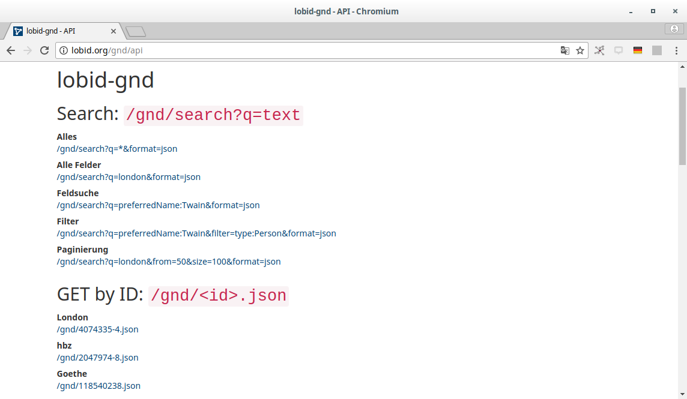
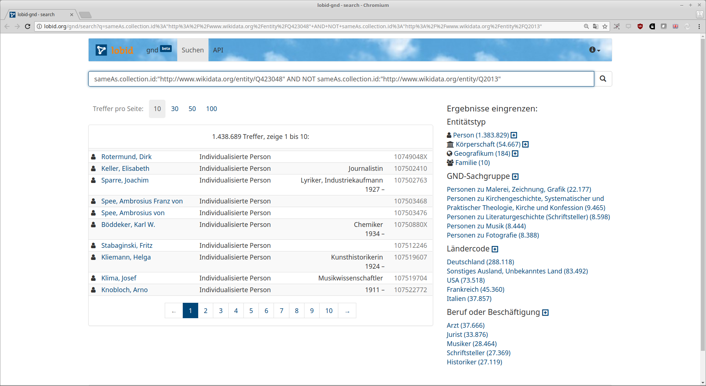
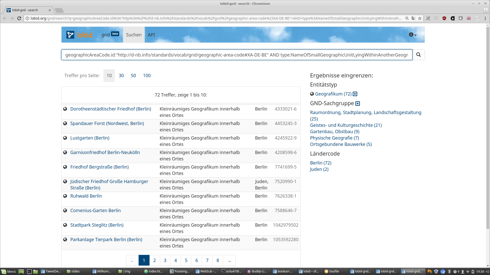

lobid-gnd –
Rechercheoberfläche & LOD-API für die GND
Adrian Pohl /
@acka47 &
Fabian Steeg /
@fsteeg
Linked
Open Data, Hochschulbibliothekszentrum NRW (hbz)

Frankfurt am Main, 2018-12-04
Diese Präsentation:
http://slides.lobid.org/gndcon18/

Agenda
- lobid
- lobid-gnd
- Oberfläche
- Daten
- API
- Anwendungsbeispiele
- Kibana-Visualisierungen
1. lobid
Linking open (bibliographic) data
Dateninfrastruktur für Bibliotheken, Archive, Museen
Das hbz entwickelt seit 2009 Software im Bereich Linked Open Data
Leitlinien:
1. Publikation offen lizenzierter Daten zur freien Nutzung
2. Nutzung domänenübergreifender Web-Standards
3. Bereitstellung von Web-APIs plus Endnutzeroberflächen
lobid-Dienste
Mittlerweile sind alle Dienste in der zweiten Version
lobid-resources: Daten des hbz-Verbundkatalogs
lobid-organisations: Daten des deutschsprachigen Sigelverzeichnisses und DBS-Stammdaten
lobid-gnd: Gemeinsame Normdatei
Datenquellen und -formate

Einheitlicher Zugriff bei unterschiedlichen Quellformaten und -systemen
2. lobid-gnd
a. Die Oberfläche

Auto Suggest

Ergebnisliste

Einzeltreffer

Beziehungsgraph

b. Die Daten

JSON(-LD)


Datenherkunft & -generierung
Tägl. Bezug der GND-RDF-Daten von der DNB via OAI-PMH
Konversion nach JSON-LD mittels @context, Framing etc.
Homogenisierung von Typen und Label-Properties
Labels für verlinkte Ressourcen ergänzen
Anreicherung mit EntityFacts-Links und -Bildern
Et voilà: Linked Open Usable Data (LOUD) -> siehe Rob Sanderson's Europeanatech 2018 Keynote (Slides, Aufzeichnung)
c. Web-API
Abfrage-Möglichkeiten
JSON-LD-Daten in Elasticsearch-Index
Elasticsearch bzw. Lucene Suchsyntax
OpenRefine Reconciliation Endpoint
Für Einzeltreffer andere RDF-Serialisierungen per Content Negotiation
Beispiel-Abfragen
Personen, die während der NS-Zeit in Köln geboren wurden

Einträge, die einen DDB-Link aber keinen Wikidata-Link haben
Alle Entitäten, zu denen ein Architekt angegeben wurde

"Kleinräumige Geografika" innerhalb von Berlin
3. Anwendungs-
beispiele
GND-Lookup in PUBLISSO

Basiert auf Auto-Suggest-Funktion der lobid-gnd-API
GND-Lookup im CMIF Creator 2
Der CMIF Creator ermöglicht das bequeme, formularbasierte Erstellen von digitalen Briefverzeichnissen gedruckter Editionen im "Corresponence Metadata Interchange Format" (CMIF) – auch ohne technische Kenntnisse. (...) [Es ist] nun möglich, direkt im Formular die zu einer Person oder Körperschaft passende ID aus der Gemeinsamen Normdatei auszuwählen. Hierbei greift der CMIF Creator 2 auf die von lobid.org bereitgestellte GND-API zurück.
Quelle: Stefan Dumont, "correspSearch: Neue Tools, neue Daten – und eine Auszeichnung"
"Semantische Suchanfragen"
Siehe den Blgobeitrag Semantische Suchabfragen mit der Linked Open Data Cloud generieren von Christian Erlinger-Schiedlbauer et al.
Themenvorschläge auf Basis von lobid-gnd

Suche in den Verweisungsformen der GND und Anzeige von bis zu drei Vorschlägen, die am meisten Treffer in der NWBib bringen
Reconciliation mit OpenRefine
Matchen auf GND-Ressourcen in OpenRefine
Übernahme von Daten aus spezifischen Feldern mittels Data Extension API
lobid-gnd ist der zweite Dienst nach Wikidata, der die Data Extension API unterstützt
4. Kibana-Visualisierungen
Kibana
Tool zur Visualisierung von Elasticsearch-Daten
Sehr vielseitig
Open Source
10 meistvergebene Sachgruppen
Gender-Verteilung
Top 20: Beruf oder Beschäftigung
Wünsche? Fragen?
Gerne jetzt oder später
via Twitter, E-Mail etc..
Weiterführende Informationen
API-Dokumentation, Suche und Navigation, komplexe Suchanfragen, Integration in OpenRefine